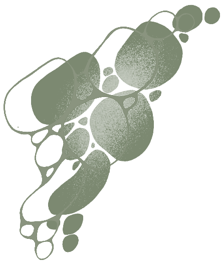

Analise o seu hemograma
Envie a foto ou o PDF do exame e veja cada valor explicado em palavras simples.
Enviar exame
Este é um projeto escolar. Não envie exames com seu nome ou dados pessoais.
Seu exame não fica salvo no site: ele é usado só para gerar a explicação. Se precisar, corte ou cubra seus dados antes de enviar.
Analisando seu exame…
Isso pode levar até meio minuto.
Não conseguimos analisar agora.
Pode ser a internet ou o serviço de IA. Você pode tentar de novo ou ver como funciona com o exame de exemplo.
Resultado
Exame de exemplo (fictício)
Resumo do exame
Isto não é um diagnóstico. Converse com um médico sobre o seu resultado.
Item por item
Lembre: o ExamIA explica o que os valores podem indicar, mas não faz diagnóstico. Leve o exame a um profissional de saúde, principalmente se algum item estiver fora da referência.
A IA pode errar ao ler o exame: confira os valores com o seu papel.